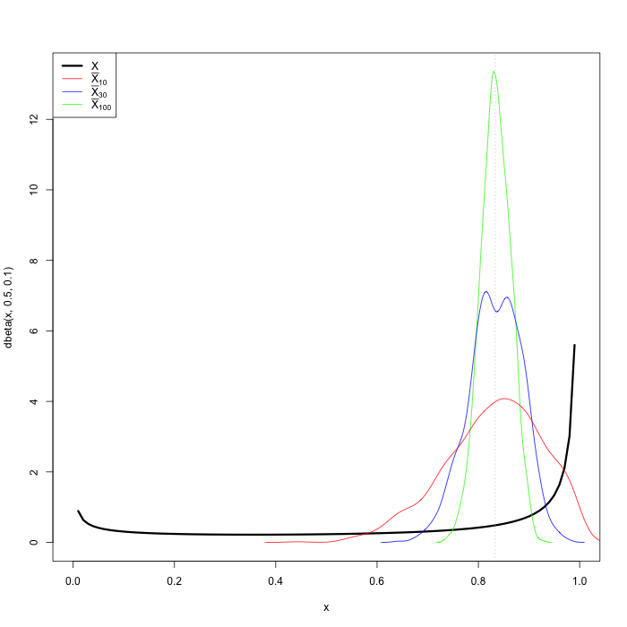

class: center, middle # Survey of Statistical Machine Learning ## [https://github.com/dsidavis/SurveyStatML](https://github.com/dsidavis/SurveyStatML) ### Duncan Temple Lang <div style="clear: both"/> <!-- <hr width="50%"/> --> <img src="http://dsi.ucdavis.edu/images/dsi_banner.png" height="40%"></img> --- layout: true <img style="float: right" src="http://dsi.ucdavis.edu/images/dsi_brand_logo.png" width="10%"></img> --- # Motivation/Purpose + Get feedback from you on + what you already know, + what you think you know + what you want to know + what level of detail + We'll adapt for next week + cover different topics + revisit today's topics with different focus + move up/down a level of technical detail + focus more on software, case studies, theory. + Concept for a course in Data Science for a graduate Designated Emphasis and Graduate Academic Certificate. --- # Today + General concepts of ML, Data Analysis, Vocabulary + Refresher about sampling distribution. + Binary Classification <!-- Why classification. + Easier to understand - more heuristic. + Prediction/Classification rather than inference. + Some nice modern(ish) concepts + Don't teach as much as non-parametric classification/prediction methods in class, relative to regression. + Regression, regularization, etc. somewhat/slightly more complex + We won't go to deep learning today, but figure out whether it would be good for next week. --> --- # Garbage In, Garbage Out ## If you mislead machine learning, it will mislead you. + Stat Machine Learning Methods are important, but are just one part of the data pipeline + Frame question incorrectly, result is *severely challenged*. + Measure the wrong concept, ... + Sample incorrectly, inference about target population is *mostly flawed/unreliable*. + Many people don't consider issues of sampling bias/found data. + Sampling bias ≠ Estimation bias. + Mess up data acquisition systematically, **inference is broken**. + Clean data poorly, inference is *often challenged*. ## The data pipeline can fail at *any* stage. --- # Framing the Learning Problem ## E.g. SPAM Email + Collect representative emails + Not my email! + Read their the metadata, text, attachments. + Clean stop words, stem, ... + How much do we care about missing emails that are relevant to me? + How much spam can I deal with it? --- # Why so many methods? <center style="padding-top: 10px"><i>"There is no free lunch in statistics: no one method dominates all others over all possible data sets. On a particular data set, one specific method may work best, but some other method may work better on a similar but different data set."</i></center> <div style="float: right">Introduction to Statistical Learning with R</div> <div style="clear:both; padding-top: 40px"/> + So need to consider different methods + Need to be aware that your "best" method may be specific to your particular sample. + Get a different sample, different method might be "best". + Data analysis still requires human decisions. --- # Qualitatively Robust Results ### Compare Alternative Methods + If your (qualitative) conclusions are very different (i.e. very sensitive) to the choice of method, you probably have a problem. + So we like to use several methods and compare the results. + Exploratory analysis of differences may reveal new features via residuals. + In some cases, we will combine the results from multiple methods - ensembles. ### So let's not get wedded to particular methods. --- # Methods versus Data Analysis + Understandable focus on methods. + Data exploration, feature engineering critical. + Important to define loss function for "real" question. --- # Purpose of Machine Learning ## Prediction versus Classification versus Estimation + Prediction + Predict continuous/integer valued response given predictor values + Classification + Predicting Categorical outcome from given predictor values + Binary outcome or multi-class outcome + Prediction v Classification + Magnitude of error versus Misclassification + Cost of misclassification to different groups + Estimation + Interpretation of parameters in model --- # Supervized, Unsupervized, Semi-supervized + Supervized - have values for response, and predictors + Unsupervized - don't have response, only predictors +XXX --- # Parametric, non-Parametric. + Distributional assumptions about variables versus None + Normal, Exponential versus Ranks, Permutations, ... + Assume functional form (e.g. linear) verus No functional form. --- # Basics + Characterize the following panels. --- # Sampling Variability + Start with population + Take sample $x_1, x_2, ..., x_n$. + Estimate population parameter $\hat\theta_n = T(x_1, ..., x_n)$ + Interested in ___Sampling Distribution of Estimator___ + Distribution of $\hat\theta_n$ across different samples of same size --- # Estimating 95th Quantile + Sampling distribution of .95th quantile? + of maximum? ---  <div style="float: right"> + Density for small sample exceeds 1 + 2 peaks in 30 observation density </div> --- # Sampling Distribution + Exact formula + Approximate with Central Limit Theorem + Assumptions? --- # Bootstrap + Generate new samples based on our original sample + Parametric versus Non-parametric + Create $x_1^*, ..., x_n^*$ from sample + 2 ways + --- # Classification --- # Linear Discriminant Analysis + Handles multiple classes easily. + Somewhat tied to the Multivariate Normal assumption. + Derive from either + Bayes classifier and Bayes Theorem, or + Ratio of Likelihoods for multivariate normals. + Consider + Single predictor X + Two classes k = 1, 2 + $f_k(x) \sim Normal(\mu_k, \sigma^2)$ - same SD + equal proportion for k = 1, 2 (priors) + Compare $f_k(x)$ for k = 1, 2 and assign to whichever is higher. + Equivalent to left or right of midway between two means + Left or right of $(\mu_1 + \mu_2)/2$ --- # LDA - Multivariate, Multiple Classes <!-- Plot for 3 classes, with X1 and X2. ISLR Fg 4.6 --> + Discriminant function + Univarite predictor: $\hat{\delta}_k(x) = x \frac{\hat\mu_k}{\hat\sigma^2} − \frac{\hat\mu^2_k}{2\sigma^2} +log(\pi_k)$ + Multivariate form: $\hat{\delta}_k(x) = x^T \hat\Sigma^{-1}\hat\mu_k − .5\hat\mu^T_k\hat\Sigma^{-1}\hat\mu_k +log(\pi_k)$ + For new observation, get x + Compute $\delta_k(x)$ for each class k and assign to the class with the maximum value. + Linear in X + Multiple (k) classification boundaries - each separating the different Multivariate Normal distributions + Assumes same covariance matrix for each class. + Covariance matrix indicates the correlation between the predictors - $X_1$, $X_2$, ... --- # Quadratic Discriminant Analysis + When the different classes have different variance-covariance matrices. + $\delta_k(x) = −.5 x^T\Sigma_k^{-1} x + x^T \Sigma_k^{-1} \mu_k − .5 \mu_k^T\Sigma_k^{−1}\mu_k −.5log\vert\Sigma_k\vert + log(\pi_k)$ + Quadratic in x in first term. + Consider for p = 1, one predictor, and k = 2 Normals with different variances + Now take variances into account, and not just mid point between two means + Still comparing posteriors, but suppose equal $\pi_k$, so compare densities. <!-- check in blye book --> + If actually different covariance matrices + Bias in our assumption $\Sigma_k = \Sigma$ + But decrease variance because better estimate of $\Sigma$. + If actually same covariance matrices + QDA has higher variance in estimates + No actual bias. --- # Comparison of Methods <!-- See Figure 4.11 and scenarios. p166 kNN-1 uniformly dominated. Never best. Comparisons don't take into account that logistic could have been fit on the derived variables X^2 X1*X2 used to create the boundaries. Some EDA may have discovered this. But back to bias variance trade-off. --> + Each works "best" if its assumptions actually hold. + kNN works well (better than LDA/QDA) when the decision boundaries are highly non-linear + kNN > QDA > LDA + QDA borrows "strength"/information from Normality, but gives flexibility. + Can we get increased non-linearity in QDA with derived variables, e.g. $X_1^2$, $log(X_2)$? + Still need the normality to hold for all variables. + So may have to omit $X_2$ if bringing in $log(X_2)$ as both not likely to be Normal. + Can add these to logistic regression relatively easily. + Have to deal with collinearity. --- # Linear Regression + Ordinary Least Squares + Maximum Likelihood + Why is X1 + X1^2 linear? + What is the loss function? + --- # Bias-Variance Tradeoff $$\hbox{Test MSE} = E(y - \hat{f}(x_0))^2 = Var(\epsilon) + Var(\hat{f}(x_0)) + Bias(\hat{f}(x_0))^2$$ + Bias = $f(x_0) - \hat{f}(x_0)$ + structural difference between truth and our model. + Doesn't get better with more data. + $Var(\hat{f})$ - how much does $\hat{f}$ change across different samples. + Sampling variability of the statistic/model. + Should decrease with larger sample size. + $Var(\epsilon)$ - Irreducible, inherent randomness for each observation. + Can't get prediction below this (without changing this itself). <!-- How do we reduce variance? Average "observations". Suggests ensembles. Increase the number --> --- # Classification & Regression Trees + Parametric or Non-parametric? --- # Naieve Bayes + Consider classifying an email as HAM/SPAM + Each observation is an email. + Label - SPAM = True or False + Response Y = label + Predictors/Covariates ? + Need to create variables from the email message + Email message consists of + Header containing metadata + body + 0 or more attachments, each of which hs + Header + body + Can measure anything about the email, but clearly want variables that help us to predict/discriminte between SPAM and HAM. + Take a subset to do feature engineering. + Don't snoop on the entire data set. Otherwise can't validate whether this is real or specific/overfitting to the current sample. --- # Resources 1. An Introduction to Statistical Learning, James, Whitten, Hastie and Tibshirani http://www-bcf.usc.edu/~gareth/ISL/ 2. Elements of Statistical Learning, Hastie, Tibshirani and Friedman. <!-- # Reinforcement Learning -->